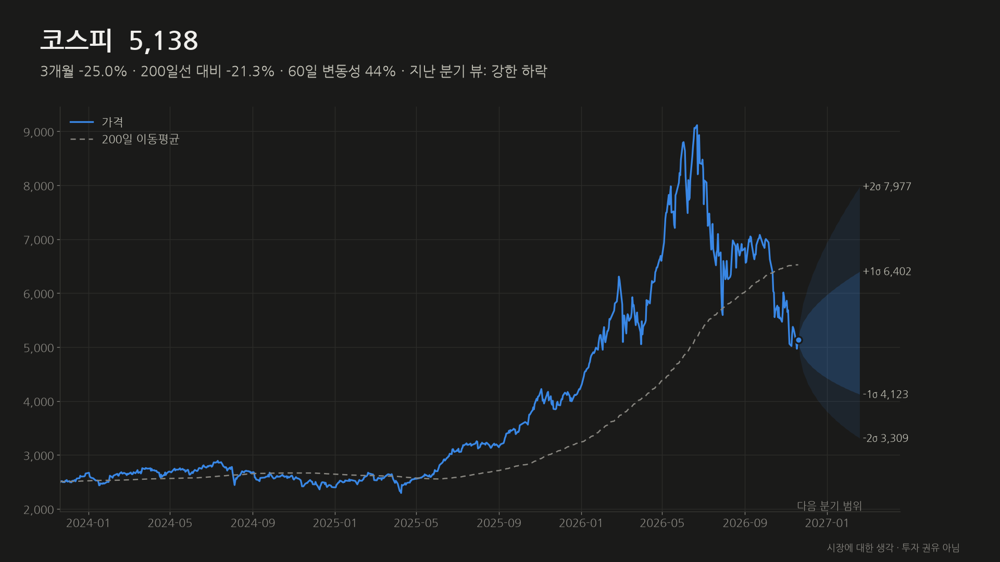
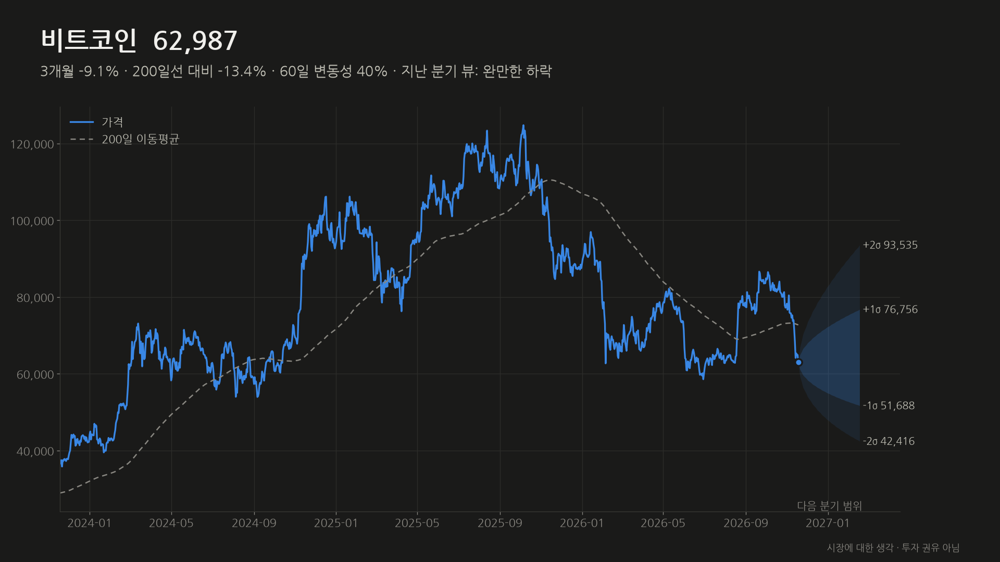
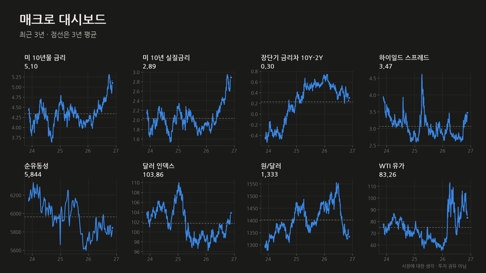
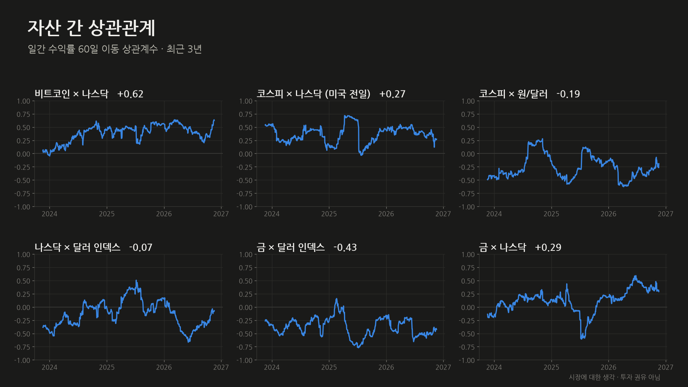
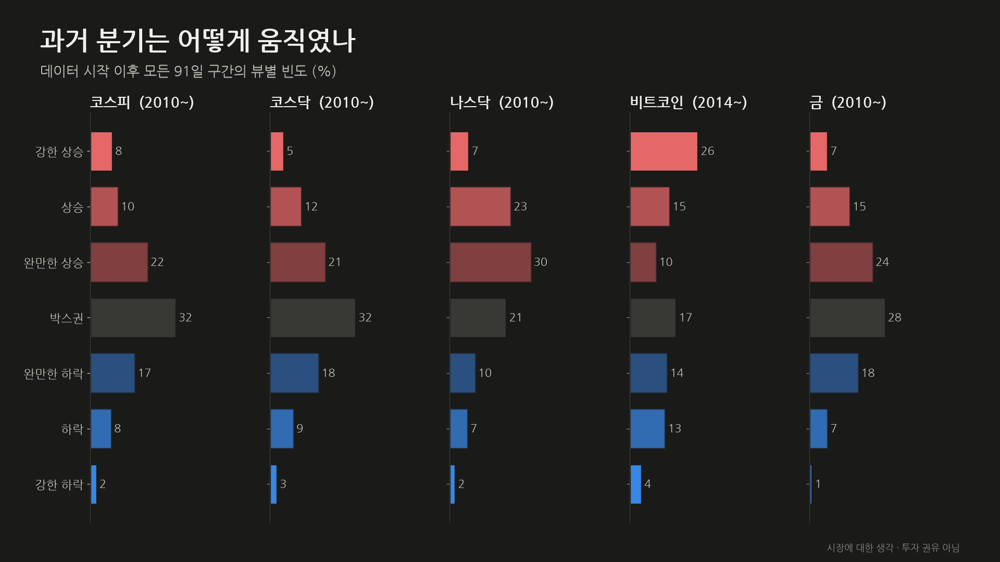

분기 대시보드 · 자동 생성
시장 스냅숏 2026-11-19
분기 서한을 쓰기 위한 데이터 재료입니다. 해석은 서한에 씁니다.
핵심 자산
칩 = 지난 91일 수익률로 판정한 뷰코스피 강한 하락
5,138
- 1M / 3M
- -7.5% / -25.0%
- 200일선 대비
- -21.3%
- 52주 고점 대비
- -43.6%
- 60일 변동성
- 44%
- 다음 분기 1σ
- 4,123 ~ 6,402
코스닥 강한 하락
684.81
- 1M / 3M
- -12.4% / -18.6%
- 200일선 대비
- -28.2%
- 52주 고점 대비
- -44.2%
- 60일 변동성
- 43%
- 다음 분기 1σ
- 551.33 ~ 850.61
나스닥 완만한 하락
24,430
- 1M / 3M
- -7.6% / -7.2%
- 200일선 대비
- -2.9%
- 52주 고점 대비
- -11.5%
- 60일 변동성
- 22%
- 다음 분기 1σ
- 21,930 ~ 27,214
비트코인 완만한 하락
$62,987
- 1M / 3M
- -23.0% / -9.1%
- 200일선 대비
- -13.4%
- 52주 고점 대비
- -35.0%
- 60일 변동성
- 40%
- 다음 분기 1σ
- 51,688 ~ 76,756
금 강한 하락
$3,742
- 1M / 3M
- -10.1% / -17.7%
- 200일선 대비
- -16.1%
- 52주 고점 대비
- -29.6%
- 60일 변동성
- 22%
- 다음 분기 1σ
- 3,357 ~ 4,171
자산별 차트
3년 가격 · 200일선 · 다음 91일 1σ/2σ 범위




매크로
10년 분위 = 지난 10년 중 현재 값보다 낮았던 관측의 비율
| 지표 | 현재 | 1M 변화 | 3M 변화 | 10년 분위 | 관측일 |
|---|---|---|---|---|---|
| 미 10년물 금리 (%) | 5.10 | +0.01 | +0.39 | 99% | 11-17 |
| 미 2년물 금리 (%) | 4.80 | +0.06 | +0.61 | 94% | 11-17 |
| 미 10년 실질금리 (%) | 2.89 | +0.15 | +0.48 | 100% | 11-17 |
| 10년 기대인플레이션 (%) | 2.19 | -0.16 | -0.11 | 45% | 11-18 |
| 연방기금금리 (%) | 3.88 | +0.00 | +0.25 | 69% | 11-17 |
| 하이일드 스프레드 (%p) | 3.47 | +0.18 | +0.74 | 90% | 11-18 |
| 역레포 잔액 (십억$) | 0.33 | +0.00 | +0.01 | 11% | 11-18 |
| 장단기 금리차 10Y-2Y (%p) | 0.30 | -0.05 | -0.22 | 45% | 11-17 |
| 순유동성 (십억$) | 5,844 | -20.62 | +49.07 | 53% | 11-11 |
| 보조 자산 | 종가 | 1M | 3M | YTD | 200일선 대비 | 기준일 |
|---|---|---|---|---|---|---|
| S&P 500 | 7,324 | -4.8% | -5.0% | +7.0% | -0.3% | 11-18 |
| 필라델피아 반도체 | 9,653 | -14.7% | -17.8% | +36.3% | -11.5% | 11-18 |
| 이더리움 | 1,775 | -26.2% | -21.2% | -40.2% | -16.9% | 11-18 |
| WTI 유가 | 83.26 | -19.7% | -3.0% | +45.0% | -5.5% | 11-18 |
| 달러 인덱스 | 103.86 | +1.8% | +5.1% | +5.7% | +3.9% | 11-18 |
| 원/달러 | 1,333 | -0.0% | -5.7% | -7.3% | -7.4% | 11-18 |
| VIX | 24.56 | +33.2% | +64.9% | +64.3% | +32.6% | 11-18 |
자산 간 상관관계
일간 수익률 60일 · 한국×미국은 시차 보정
| 쌍 | 현재 | 1년 평균 |
|---|---|---|
| 비트코인 × 나스닥 | +0.62 | +0.47 |
| 코스피 × 나스닥 (미국 전일) | +0.27 | +0.42 |
| 코스피 × 원/달러 | -0.19 | -0.34 |
| 나스닥 × 달러 인덱스 | -0.07 | -0.24 |
| 금 × 달러 인덱스 | -0.43 | -0.39 |
| 금 × 나스닥 | +0.29 | +0.30 |
과거 분기는 어떻게 움직였나
데이터 시작 이후 모든 91일 구간, %
| 자산 | 강한 하락 | 하락 | 완만한 하락 | 박스권 | 완만한 상승 | 상승 | 강한 상승 |
|---|---|---|---|---|---|---|---|
| 코스피 (2010~) | 2 | 8 | 17 | 32 | 22 | 10 | 8 |
| 코스닥 (2010~) | 3 | 9 | 18 | 32 | 21 | 12 | 5 |
| 나스닥 (2010~) | 2 | 7 | 10 | 21 | 30 | 23 | 7 |
| 비트코인 (2014~) | 4 | 13 | 14 | 17 | 10 | 15 | 26 |
| 금 (2010~) | 1 | 7 | 18 | 28 | 24 | 15 | 7 |
다가오는 일정
45일 · 전체 일정 →| 날짜 | 남은 날 | 일정 | 지역 | 메모 | 구분 |
|---|---|---|---|---|---|
| 11-25(수) | D-5 | 미국 개인소득·지출 PCE 물가 (10월분) | 미국 | 한국시간 22:30 (서머타임 21:30) | 공식 |
| 11-25(수) | D-5 | 미국 GDP 3분기 2차 | 미국 | 한국시간 22:30 (서머타임 21:30) | 공식 |
| 11-26(목) | D-6 | 한국은행 기준금리 결정 | 한국 | 공식 | |
| 12-01(화) | D-11 | 미국 구인·이직 JOLTS (10월분) | 미국 | 한국시간 다음 날 00:00 (서머타임 23:00) | 공식 |
| 12-01(화) | D-11 | 한국 수출입 동향 (11월분) | 한국 | 매월 1일 발표가 관례, 휴일이면 바뀔 수 있음 | 관례 |
| 12-04(금) | D-14 | 미국 고용보고서 비농업 고용·실업률 (11월분) | 미국 | 한국시간 22:30 (서머타임 21:30) | 공식 |
| 12-09(수) | D-19 | 미국 FOMC 기준금리 결정 | 미국 | 점도표(SEP) 발표; 발표 한국시간 다음 날 새벽 4시 (서머타임 3시) | 공식 |
| 12-10(목) | D-20 | 미국 소비자물가 CPI (11월분) | 미국 | 한국시간 22:30 (서머타임 21:30) | 공식 |
| 12-15(화) | D-25 | 미국 생산자물가 PPI (11월분) | 미국 | 한국시간 22:30 (서머타임 21:30) | 공식 |
| 12-16(수) | D-26 | 미국 소매판매 (11월분) | 미국 | 한국시간 22:30 (서머타임 21:30) | 공식 |
| 12-23(수) | D-33 | 미국 개인소득·지출 PCE 물가 (11월분) | 미국 | 한국시간 22:30 (서머타임 21:30) | 공식 |
| 12-23(수) | D-33 | 미국 GDP 3분기 3차 | 미국 | 한국시간 22:30 (서머타임 21:30) | 공식 |
| 12-30(수) | D-40 | 미국 FOMC 의사록 (12월 회의) | 미국 | 결정 3주 뒤 공개 관행, 한국시간 다음 날 새벽 | 관례 |
| 01-01(금) | D-42 | 한국 수출입 동향 (12월분) | 한국 | 매월 1일 발표가 관례, 휴일이면 바뀔 수 있음 | 관례 |
예측 장부
predictions.csv| ID | 자산 | 뷰 | 목표 구간 | 구간 폭 (1σ 대비) | 기준값 | 만기 | 결과 |
|---|---|---|---|---|---|---|---|
| 2026Q4-01 | 코스피 | 완만한 상승 | 4,800 ~ 5,900 | 0.49 | 5,067 | 2027-02-18 | 채점 전 |
| 2026Q4-02 | 코스닥 | 박스권 | 600.00 ~ 740.00 | 0.48 | 662.81 | 2027-02-18 | 채점 전 |
| 2026Q4-03 | 나스닥 | 완만한 상승 | 23,500 ~ 27,000 | 0.66 | 24,328 | 2027-02-18 | 채점 전 |
| 2026Q4-04 | 비트코인 | 완만한 하락 | 50,000 ~ 69,000 | 0.74 | 64,894 | 2027-02-18 | 채점 전 |
| 2026Q4-05 | 금 | 박스권 | 3,600 ~ 4,150 | 0.68 | 3,864 | 2027-02-18 | 채점 전 |
점수 = 뷰 점수(적중 1.0, 한 칸 차이 0.5) × 50% + 구간 적중 × 50%. 구간 폭은 목표 구간 폭 ÷ 기록 시점 다음 분기 1σ 범위 폭으로, 작을수록 과감한 예측입니다.
데이터 검증
독립 출처 대조 10/10 일치 · 최근 45일수집 출처(yfinance·FinanceDataReader)와 원천이 다른 출처로 종가를 대조합니다. 한국은 네이버 금융, 미국 지수는 FRED, 코인은 코인베이스(거래소 차이로 0.5%까지 허용).
| 자산 | 대조 출처 | 결과 | 내용 |
|---|---|---|---|
| 코스피 | 네이버 | 일치 | 32일 · 최대 차이 0.000% · ~2026-11-19 |
| 코스닥 | 네이버 | 일치 | 32일 · 최대 차이 0.000% · ~2026-11-19 |
| 나스닥 | FRED | 일치 | 32일 · 최대 차이 0.000% · ~2026-11-18 |
| S&P 500 | FRED | 일치 | 32일 · 최대 차이 0.000% · ~2026-11-18 |
| VIX | FRED | 일치 | 32일 · 최대 차이 0.000% · ~2026-11-18 |
| 비트코인 | 코인베이스 | 일치 | 44일 · 최대 차이 0.227% · ~2026-11-18 |
| 이더리움 | 코인베이스 | 일치 | 44일 · 최대 차이 0.204% · ~2026-11-18 |
| 금 | 네이버 | 일치 | 32일 · 최대 차이 0.000% · ~2026-11-18 |
| 삼성전자 | 네이버 | 일치 | 32일 · 최대 차이 0.000% · ~2026-11-19 |
| SK하이닉스 | 네이버 | 일치 | 32일 · 최대 차이 0.000% · ~2026-11-19 |
| 필라델피아 반도체 | - | 단일 출처 | 대조할 독립 출처 없음 |
| WTI 유가 | - | 단일 출처 | 대조할 독립 출처 없음 |
| 달러 인덱스 | - | 단일 출처 | 대조할 독립 출처 없음 |
| 원/달러 | - | 단일 출처 | 대조할 독립 출처 없음 |
| 엔비디아 | - | 단일 출처 | 대조할 독립 출처 없음 |
| TSMC | - | 단일 출처 | 대조할 독립 출처 없음 |
원/달러는 출처 간 일자 불일치가 있어 한국은행 공식 환율로 교체할 예정입니다. 코스피 × 원/달러 상관은 참고용입니다.